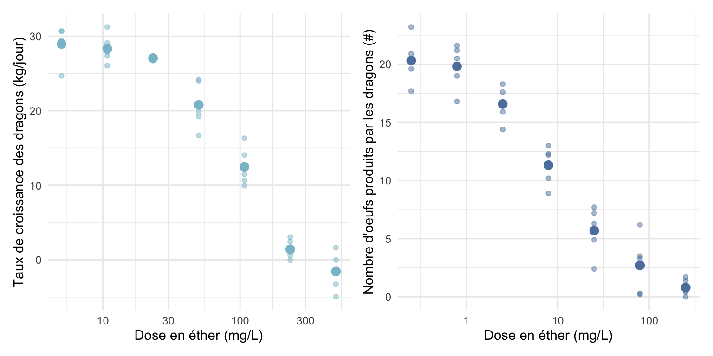
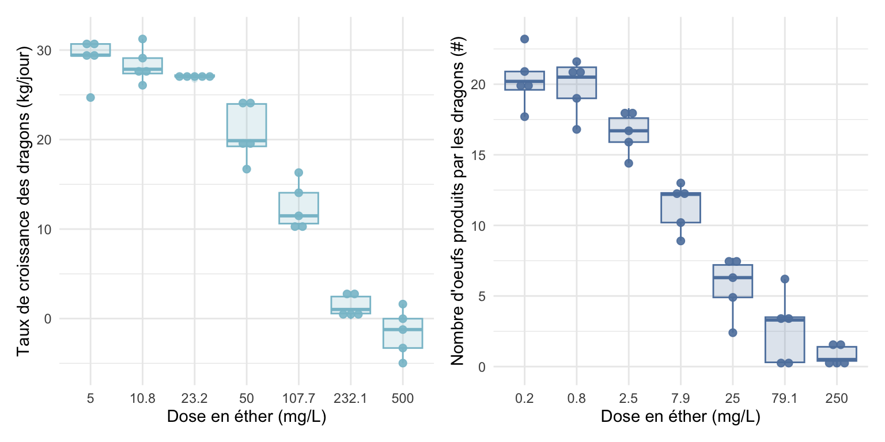

On peut faire un graphique avec deux types de points : Les points correspondant aux réplicats et les points correspondant à la moyenne pour une dose donnée (Figure 2.1).
Code
# Paramètres des graphiques size_mean <-3alpha_rep <-0.5p_C <-ggplot()+# Nuage de points avec un point par réplicatgeom_point(data = df_sim_croiss,mapping =aes(x = Dose,y = Txcroiss ),alpha = alpha_rep,color = col_croiss )+# Nuage de points correspondant aux moyennes par dosegeom_point(data = df_sim_croiss_mean,mapping =aes(x = Dose,y = Txcroiss ),alpha =1,color = col_croiss,size = size_mean )+scale_x_log10()+labs(x ="Dose en éther (mg/L)",y ="Taux de croissance des dragons (kg/jour)" )+theme_minimal()p_R <-ggplot()+# Nuage de points avec un point par réplicatgeom_point(data = df_sim_repro, mapping =aes( x = Dose, y = Oeuf ), alpha = alpha_rep, color = col_repro )+# Nuage de points correspondant aux moyennes par dosegeom_point(data = df_sim_repro_mean,mapping =aes(x = Dose,y = Oeuf ),alpha =1,color = col_repro,size = size_mean )+scale_x_log10()+labs( x ="Dose en éther (mg/L)",y ="Nombre d'oeufs produits par les dragons (#)" )+theme_minimal()p <- p_C + p_R +plot_layout(ncol =2)p
1
Initialisation du graphique
2
Données utilisées pour ce nuage de points
3
Axes à utiliser pour ce nuage de points
4
Transparence des points
5
Couleur des points
6
Taille des points pour ce nuage de points
7
Axe des x mis en échelle log (logarithme base 10)
8
Titres des axes
9
Aspect général du graphique
10
Les deux graphiques sont mis côte à côte

Figure 2.1: Taux de croissance et production d’oeufs des dragons en fonction de la dose d’éther
Ou on peut faire des bowplots, où la dose est bien une catégorie et non un nombre (Figure 2.2).
Code
# Paramètres des graphiques alpha_box <-0.2p_C <-ggplot(data = df_sim_croiss, mapping =aes( x =as.factor(round(Dose,1)), y = Txcroiss ) )+# Boxplotgeom_boxplot(alpha = alpha_box, color = col_croiss, fill = col_croiss )+# Pointsgeom_dotplot(binaxis='y', stackdir='center', dotsize=0.7, alpha=0.9, color = col_croiss,fill = col_croiss )+labs( x ="Dose en éther (mg/L)", y ="Taux de croissance des dragons (kg/jour)" )+theme_minimal() p_R <-ggplot(data = df_sim_repro, mapping =aes( x =as.factor(round(Dose,1)), y = Oeuf ) )+# Boxplotgeom_boxplot(alpha = alpha_box, color = col_repro, fill = col_repro )+# Pointsgeom_dotplot(binaxis='y', stackdir='center', dotsize=0.7, alpha=0.9, color = col_repro,fill = col_repro )+labs( x ="Dose en éther (mg/L)", y ="Nombre d'oeufs produits par les dragons (#)" )+theme_minimal() p <- p_C + p_R +plot_layout(ncol =2) p

Figure 2.2: Taux de croissance et production d’oeufs des dragons en fonction de la dose d’éther
Source Code
# Modélisation de la courbe dose-réponse - Exemple```{r, include=F}library(tidyverse); library(drc); library(readxl); library(nord); library(patchwork)Nord_frost <- nord(palette = "frost")Nord_aurora <- nord(palette = "aurora")Nord_polar <- nord(palette = "polarnight")Nord_snow <- nord(palette = "snowstorm")col_croiss <- Nord_frost[2]col_repro <- Nord_frost[4]``````{r, eval=F}#| code-fold: showlibrary(tidyverse); library(drc); library(readxl); library(nord) # <1> Nord_frost <- nord(palette = "frost") # <2> Nord_aurora <- nord(palette = "aurora") # <2> Nord_polar <- nord(palette = "polarnight") # <2> Nord_snow <- nord(palette = "snowstorm") # <2> col_croiss <- Nord_frost[2] # <3>col_repro <- Nord_frost[4] # <3>```1. Packages utilisés ici2. Palettes de couleurs sympa qui vient d'ici : https://www.nordtheme.com3. Définition des couleurs pour nos endpointsOn s'intéresse à l'impact de la concentration en éther dans l'air (mg/L) sur la croissance et la reproduction des dragons. ## Etape 1 - Importer et visualiser ses données```{r, message=FALSE, warning=FALSE}#| code-fold: showdf_sim_croiss <- read_excel(here::here("data/Data_sim_croiss_dragon.xlsx")) # <1>df_sim_repro <- read_excel(here::here("data/Data_sim_repro_dragon.xlsx")) # <2>```1. Importation des données de croissance de nos dragons2. Importation des données de reproduction de nos dragons```{r, message=FALSE, warning=FALSE}#| code-fold: showhead(df_sim_croiss) # <1>head(df_sim_repro) # <1>```1. Affiche les 5 premières lignesOn a des jeux de données avec :- `ID` : Numéro unique du dragon- `Nb_rep` : Numéro de réplicat par rapport à un dose donnée- `Dose` : Dose d'exposition du dragon (mg/L)- `Oeuf` : Le nombre d'oeuf produit par le dragon en 1 an- `Txcroiss` : Le taux de croissance du dragon (kg/jour)Il serait bien de d'avoir des jeux de donnée avec la moyenne du taux de croissance et la moyenne du nombre d'oeuf produit par dose testée. ```{r, message=FALSE, warning=FALSE}#| code-fold: showdf_sim_croiss_mean <- df_sim_croiss |> # <1> aggregate(Txcroiss ~ Dose, FUN = mean) # <1>df_sim_repro_mean <- df_sim_repro |> # <1> aggregate(Oeuf ~ Dose, FUN = mean) # <1>head(df_sim_croiss_mean)head(df_sim_repro_mean)```1. Creation de nouveaux dataframes avec le taux de croissance et le nombre d'oeufs produits moyen par dose.::: panel-tabset## DotsOn peut faire un graphique avec deux types de points : Les points correspondant aux réplicats et les points correspondant à la moyenne pour une dose donnée (@fig-datapoint). ```{r, message=FALSE, warning=FALSE}#| fig-cap: Taux de croissance et production d'oeufs des dragons en fonction de la dose d'éther#| label: fig-datapoint#| fig-width: 8#| fig-height: 4# Paramètres des graphiques size_mean <- 3alpha_rep <- 0.5p_C <- ggplot()+ # <1> # Nuage de points avec un point par réplicat geom_point( data = df_sim_croiss, # <2> mapping = aes( # <3> x = Dose, # <3> y = Txcroiss # <3> ), # <3> alpha = alpha_rep, # <4> color = col_croiss # <5> )+ # Nuage de points correspondant aux moyennes par dose geom_point( data = df_sim_croiss_mean, mapping = aes( x = Dose, y = Txcroiss ), alpha = 1, color = col_croiss, size = size_mean # <6> )+ scale_x_log10()+ # <7> labs( # <8> x = "Dose en éther (mg/L)", # <8> y = "Taux de croissance des dragons (kg/jour)"# <8> )+ # <8> theme_minimal() # <9>p_R <- ggplot()+ # Nuage de points avec un point par réplicat geom_point( data = df_sim_repro, mapping = aes( x = Dose, y = Oeuf ), alpha = alpha_rep, color = col_repro )+ # Nuage de points correspondant aux moyennes par dose geom_point( data = df_sim_repro_mean, mapping = aes( x = Dose, y = Oeuf ), alpha = 1, color = col_repro, size = size_mean )+ scale_x_log10()+ labs( x = "Dose en éther (mg/L)", y = "Nombre d'oeufs produits par les dragons (#)" )+ theme_minimal()p <- p_C + p_R + # <10> plot_layout(ncol = 2) # <10>p ```1. Initialisation du graphique2. Données utilisées pour ce nuage de points3. Axes à utiliser pour ce nuage de points4. Transparence des points5. Couleur des points6. Taille des points pour ce nuage de points7. Axe des x mis en échelle log (logarithme base 10)8. Titres des axes9. Aspect général du graphique10. Les deux graphiques sont mis côte à côte## BoxplotOu on peut faire des bowplots, où la dose est bien une catégorie et non un nombre (@fig-databox). ```{r, message=FALSE, warning=FALSE}#| fig-cap: Taux de croissance et production d'oeufs des dragons en fonction de la dose d'éther#| label: fig-databox#| fig-width: 8#| fig-height: 4# Paramètres des graphiques alpha_box <- 0.2p_C <- ggplot( data = df_sim_croiss, mapping = aes( x = as.factor(round(Dose,1)), y = Txcroiss ) )+ # <1> # Boxplot geom_boxplot( alpha = alpha_box, color = col_croiss, fill = col_croiss )+ # Points geom_dotplot( binaxis='y', stackdir='center', dotsize=0.7, alpha=0.9, color = col_croiss, fill = col_croiss )+ labs( x = "Dose en éther (mg/L)", y = "Taux de croissance des dragons (kg/jour)" )+ theme_minimal() p_R <- ggplot( data = df_sim_repro, mapping = aes( x = as.factor(round(Dose,1)), y = Oeuf ) )+ # <1> # Boxplot geom_boxplot( alpha = alpha_box, color = col_repro, fill = col_repro )+ # Points geom_dotplot( binaxis='y', stackdir='center', dotsize=0.7, alpha=0.9, color = col_repro, fill = col_repro )+ labs( x = "Dose en éther (mg/L)", y = "Nombre d'oeufs produits par les dragons (#)" )+ theme_minimal() p <- p_C + p_R + plot_layout(ncol = 2) p ```:::